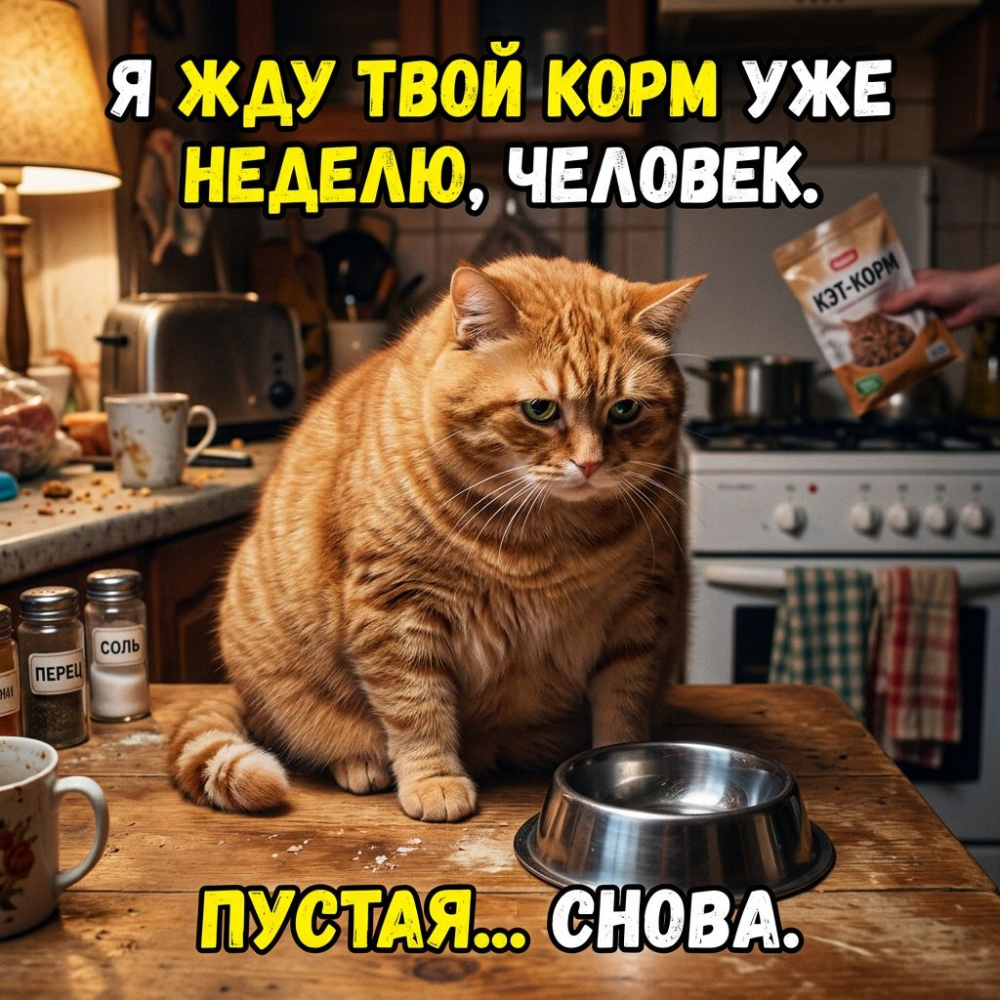
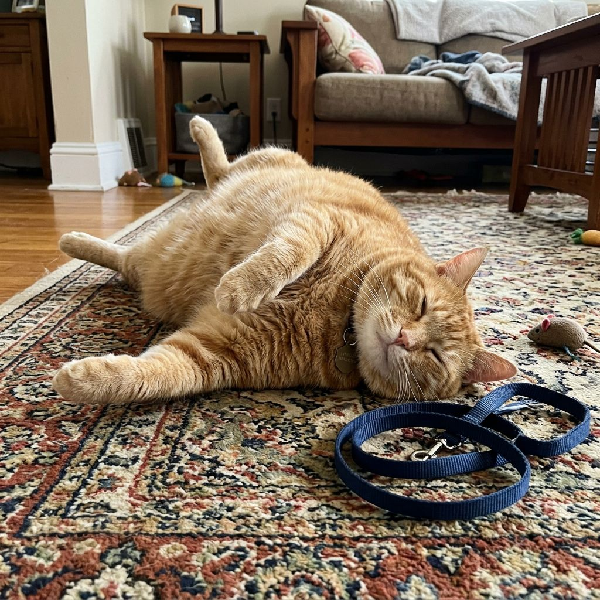
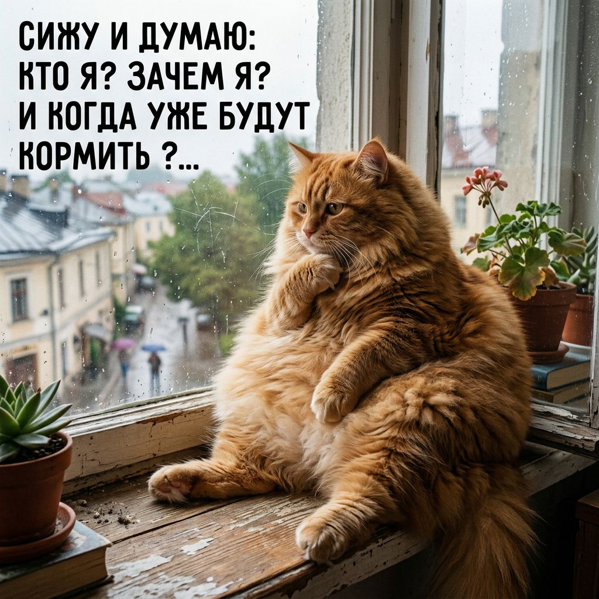
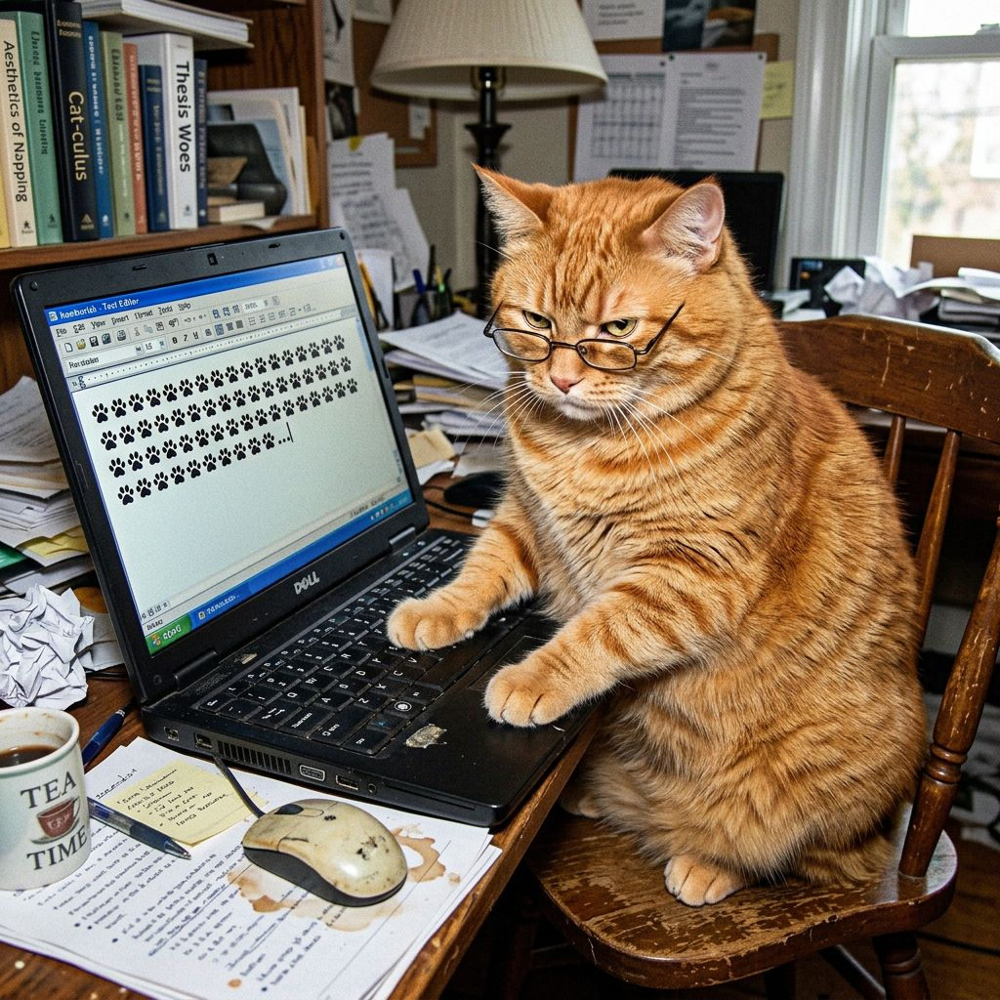

Факты о котах
Факты собраны из открытых источников, закрытых источников и личного опыта общения с одним конкретным котом, который сейчас лежит на бумагах.
Основные положения
| Утверждение | Статус |
|---|---|
| Кот всегда прав | Подтверждено котом |
| Кот хотел есть именно сейчас | Подтверждено повторно |
| Кот не сдвинется с места | Экспериментально доказано |
| Кот понял, что вы сказали | Намеренно игнорирует |
| Кот не толстый | Заявление кота, не проверено |
Наблюдения из жизни

Факт №1. Миска, которая была полной пять минут назад, официально считается пустой.
Доказательство: репортаж из новостей

Факт №2. Кот, лежащий на спине, физически не способен встать по первому требованию. Проверялось семь раз.
Доказательство: личный опыт

Факт №3. Взгляд в окно длится от трёх минут до четырёх часов и не поддаётся прогнозированию.
Доказательство: наблюдение

Факт №4. Любая работа, требующая сосредоточенности, будет прервана котом. Это не случайность, это система.
Доказательство: этот сайт
Часто задаваемые вопросы
Почему кот смотрит на меня с осуждением?
Потому что вы что-то сделали. Кот ещё не решил, что именно, но он уже это запомнил.
Можно ли приучить кота к чему-либо?
Можно. Кот приучит вас к чему угодно.
Правда ли, что мейнкуны огромные?
Да. Наш весит достаточно, чтобы на нём лежал отдельный документ о взвешивании.
Почему раздел называется «Против VS напротив»?
Мы отвечали на этот вопрос восемь раз и каждый раз отвечали по-разному. Технически все ответы верны.
Наука не знает, зачем кот это делает. Наука вообще мало что знает про котов. Наука это признаёт.